Король лев
В африканской саванне царит порядок. Королевством правит справедливый лев Муфаса, который недавно стал отцом. Текущим порядком вещей недоволен брат Муфасы Шрам. Он хочет занять место правителя, и для этого ему нужно убить короля и его наследника. Тогда Шрам заманивает Муфасу в ловушку, где тот погибает, а после убеждает маленького Симбу в том, что это он виноват в смерти отца. Львёнок сбегает, и Шрам получает трон. Спустя некоторое время Симба возвращается, чтобы вернуть то, что причитается ему по праву.
Фильмы этой серии
Король лев
У величественного Короля-Льва Муфасы рождается наследник по имени Симба. Уже в детстве любознательный малыш становится жертвой интриг своего завистливого дяди Шрама, мечтающего о власти. Симба познаёт горе утраты, предательство и изгнание, но в конце концов обретает верных друзей и находит любимую. Закалённый испытаниями, он в нелёгкой борьбе отвоёвывает своё законное место в «Круге жизни», осознав, что значит быть настоящим Королём.
Король Лев 2: Гордость Симбы
Неунывающая Киара - гордость короля Симбы. Однако маленькая озорница вовсе не спешит становиться рассудительной наследницей, ведь этот огромный мир ей хочется не просто созерцать со Скалы Предков, но и рассмотреть его поближе! Компанию Киаре составит таинственный львёнок Кову. Вместе они отправятся на поиски приключений, но от тайн прошлого не спрятаться. Мудрость Короля Льва вновь станет источником примирения враждующих сторон!
Король Лев 3: Акуна Матата
Главными героями мультфильма станут всеобщие любимцы Тимон и Пумба! Вы узнаете об этих закадычных друзьях много нового, например, о том, как они впервые встретились, что за потрясающие приключения вместе прожили и на какие удивительные подвиги их сподвигло знаменитое знакомство с будущем королем саванны Симбой.
Хранитель Лев
Юному герою африканской саванны предстоит стать лидером Львиной охраны, состоящей из самых сильных, храбрых, быстрых и зорких представителей прайда. Именно Кайон должен определить, кто займет почетное место в рядах стражей порядка. Вместо того, чтобы, следуя давней традиции, остановить свой выбор на львах, юный хранитель приглашает разделить эту ответственную миссию своих друзей, которых считает настоящими героями.
Персонажи
 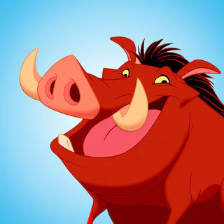
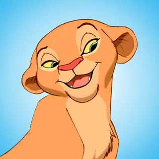
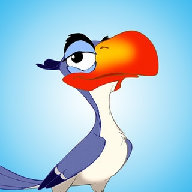
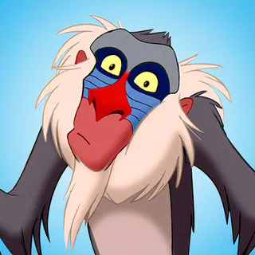
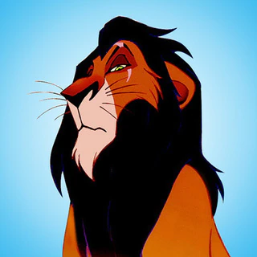
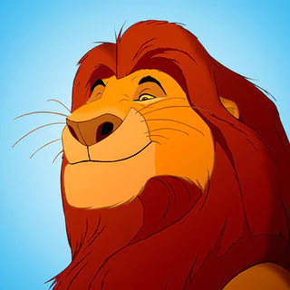
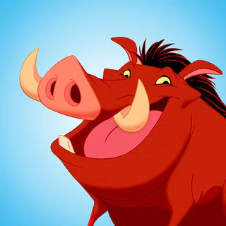
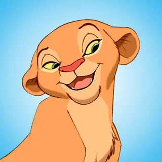
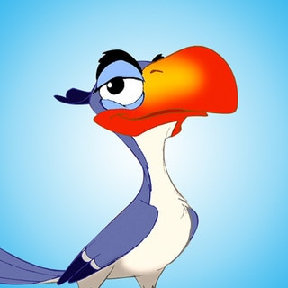
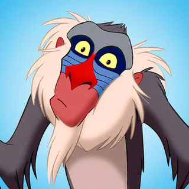
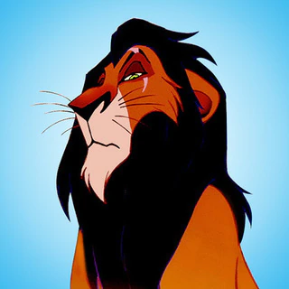
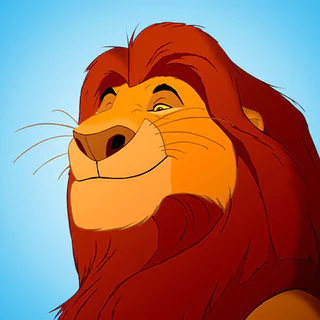
Симба
Веселый, задорный львенок Симба "просто не может дождаться, когда станет королем", но с потерей отца, Муфасы, его приключения выходят на новый путь. Симба бежит от обвинений, чувства вины и прайда, встречая по пути новых друзей, которые учат его философии отсутствия забот. Когда Симба становится взрослым, он обнаруживает, что храбрость и мудрость его отца - часть его самого, и возвращает себе место короля прайда.
Тимон
Гиперактивный сурикат с моторным ртом - самопровозглашенный "мозг команды". Между добродушными шутками в адрес Пумбаа, гурманскими комментариями по поводу современных жуков и подталкиванием Симбы к свободному образу жизни, он - верный малыш, готовый отдать свою последнюю остроту, чтобы помочь другу.

Пумба
Этот хорошо сложенный кабанчик немного неуклюж, но с лихвой компенсирует свою медлительность сопереживанием и интуицией. Пумба готов довериться любому, даже такому хищнику, как Симба, и с легкостью оказывается рядом с ним, когда его зовет судьба.
Нала
В детстве Нала была игривой, энергичной и задорной. Хотя она и Симба были лучшими друзьями, они никогда не признавались в любви, пока не воссоединились много лет спустя. Она была показана как яростный боец и известна своим особым приемом, когда она переворачивала нападающего на спину и прижимала его к земле.
Зазу
Самый надежный советник Муфасы, Зазу - чопорная и правильная птица-носорог с сильным чувством собственного достоинства. Хотя перья Зазу можно легко взъерошить, он предан Муфасе и остается с прайдом в хорошие и плохие времена.
Рафики
Старый бабуин, который путешествует своей дорогой, поет свои песни и знает то, что знает. Появившись первым, чтобы помазать новорожденного Симбу, Рафики странствует по своему мистическому пути, возвращаясь, когда приходит время, чтобы помочь Симбе вернуться на путь, который он должен пройти.
Шрам
Будучи братом Муфасы, Шрам был следующим в очереди на трон, пока не появился Симба. Отсутствие физических достоинств Шрама с лихвой компенсируется его коварной хитростью, когда он вместе со своими приспешниками гиенами замышляет вернуть свое право первородства. Он эгоистичный и жадный вожак, который едва не уничтожил прайд и землю, на которой они живут.
Муфаса
Муфаса и его спутница Сараби - родители Симбы. Муфаса, готовый играть так же, как и давать указания, ведет юного Симбу голосом таким же золотым, как и великолепная грива. Сильный, храбрый и мудрый, Муфаса - настоящий лидер, чье мужество проистекает из великой, спокойной уверенности в том, кто он такой и как он вписывается в великий Круг Жизни.